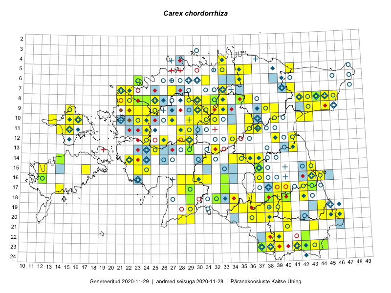

Carex chordorrhiza
Uuendatud: 2016-12-01
Kaardile koondatud taksonid: Carex chordorrhiza L.f.

Kaart põhineb 104 kirjel, neist vaatlusi 101 ja eksemplare 3.
Kuvatud viited 20 esimesele andmebaasikirjele, ülejäänud PlutoFis
- Tiit Hallikma, Indrek Tammekänd, Toomas Kukk: 2015-06-09: 12-29: ala
- Ott Luuk, Toivo Sepp: 2015-07-29: 09-31: ala
- Peedu Saar, Liina Oja: 2015-07-20: 08-44: ala
- Toomas Kukk, Tiit Hallikma: 2015-06-11: 11-29: ala
- Peedu Saar, Liina Oja: 2015-07-24: 09-45: ala
- Peedu Saar, Ott Luuk: 2015-08-12: 23-42: ala
- Peedu Saar, Eerik Leibak: 2015-08-16: 12-39: ala
- Tiit Hallikma, Toomas Kukk: 2015-07-23: 07-41: ala
- Ott Luuk, Hannes Pehlak: 2015-07-24: 09-44: ala
- Thea Kull, Peedu Saar: 2015-04-27: 08-44: ala
- Thea Kull, Peedu Saar: 2015-06-19: 17-40: ala
- Thea Kull, Peedu Saar: 2015-06-17: 17-39: ala
- Indrek Tammekänd: 2015-04-06: 15-23: ala
- Indrek Tammekänd, Liisa Rennel, Agu Leivits, Hannes Pehlak, Irja Tammekänd: 2015-04-27: 15-24: ala
- Jana-Maria Habicht, Ester Valdvee, Kirke Pilvik: 2015-07-14: 08-35: ala
- Thea Kull, Meeli Mesipuu: 2015-08-12: 16-43: ala
- Ott Luuk, Toivo Sepp: 2015-08-21: 10-29: ala
- Ott Luuk, Toivo Sepp: 2015-08-20: 11-29: ala
- Ott Luuk: 2015-08-03: 10-32: ala
- Maria Abakumova: 2015-06-30: 16-33: ala